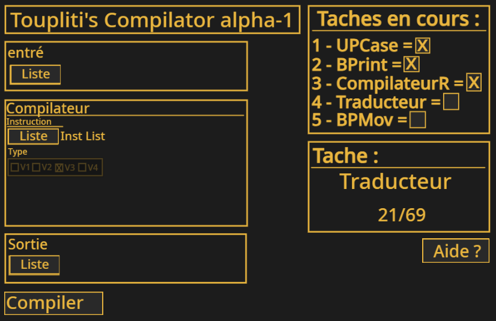

Cette page ser a expliqué comment mon code marche et quelles sont les instructions.
Mon code a 5 versions, de la v5 a la v1
V5= est la version haut niveau de mon langage de programmation qui permet d'optimiser le temps de code. Il a exactement les mêmes instructions après la compilation.
Il peut contenir plusieurs instructions dans une. (Après la compilation il peut prendre plus de place.)
V4= est la version classique de mon langage de programmation. Il est bas niveau et il a toute les instructions que les autres peuvent avoir. Vous pouvez voir la documentation ici : [lien1]
V3= est un langage après la compilation qui est en décimal. Simple mais pas très polyvalent. Mais il est très rapide.
V2= est un langage après compilation. En hexadécimal.
Il est plus compact et prend moins de place. Mais difficile a debug et est pas très rapide.
V1= est la version binaire. C'est le plus compatible. Polyvalent. Il n'est ni le plus rapide, ni le plus l'ents.
Pour l'instant il existe que 3 émulateurs de "ces code".
- La version turbowarp(no gui) v2
- turbowarp(gui) v2
- et celle de chat gpt( pas conseillé. Était un test) v4
Il y a aussi des langages modifiés pour chaque émulateur. Elle se trouve sur la page de l'émulateur et ser surtout a faire des tâches non importantes (des instructions gui pour le 2e émulateur)
Pour qu'un programme puis ne pas être perdu (pas adapté)
Les instructions bios api sont Tous les mêmes (surtout les premières instructions)
La liste des instructions bios se trouve ici
here
Les instructions v4 ce trouve ici [lien1]
Les instructions v5 ce trouve ici [lien3]
Dans la liste d'instruction v4 il y a un aperçu de la v5
La plupart du temps. Le langage v5 ne pourra pas être lu par un émulateur.
Il va falloir utiliser un compilateur.
Pour l'instant seul le compilateur de v4 a v2 existe.
[Lien4]

Une page tutoriel sera créé plus tard pour apprendre a coder dans mon langage.
 Toupliti/docs/docv1
Toupliti/docs/docv1